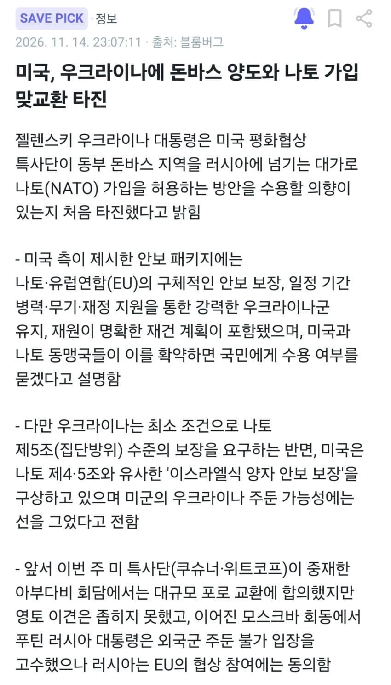
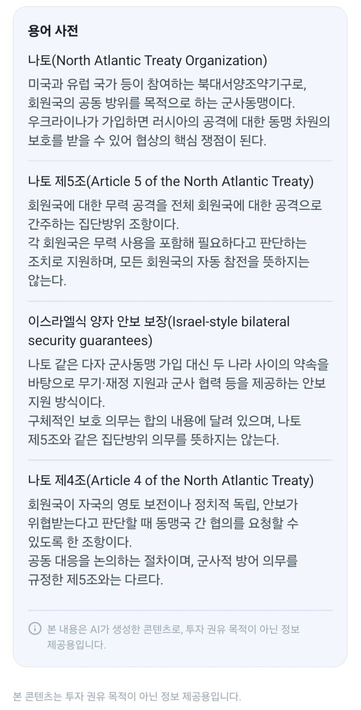
- dc official App
- 젠렌스키 "미국한테 나토 가입 대가로 돈바스 지역 양도 질의받았다"
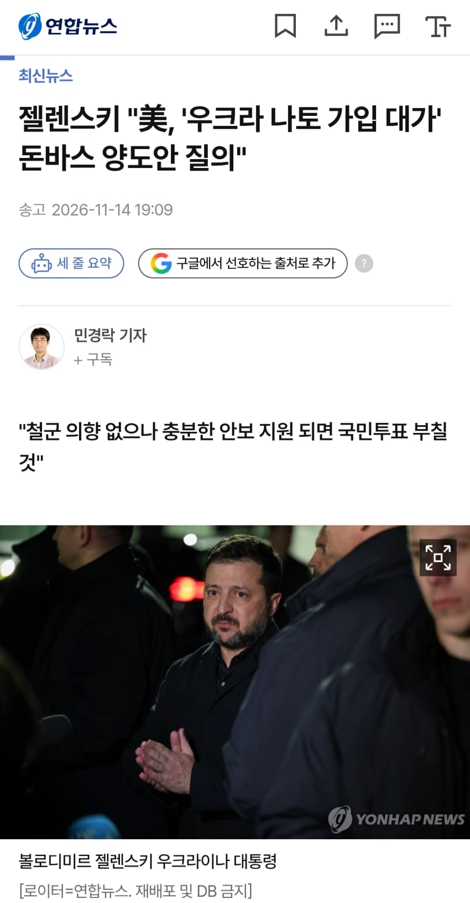
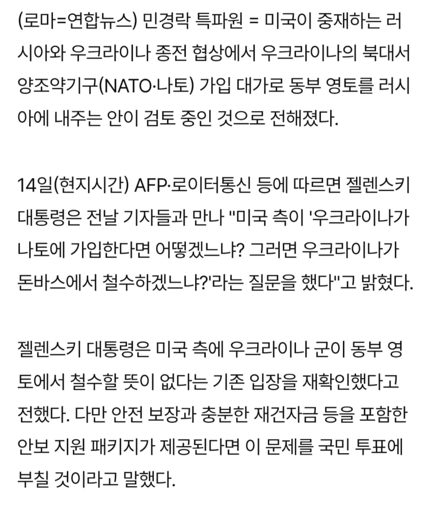
최근 미국으로부터 돈바스지역을 러시아에 완전히 할양하는 대가로 나토가입시켜주겠다는 제안을 받았다함
돈바스지역은 여기임
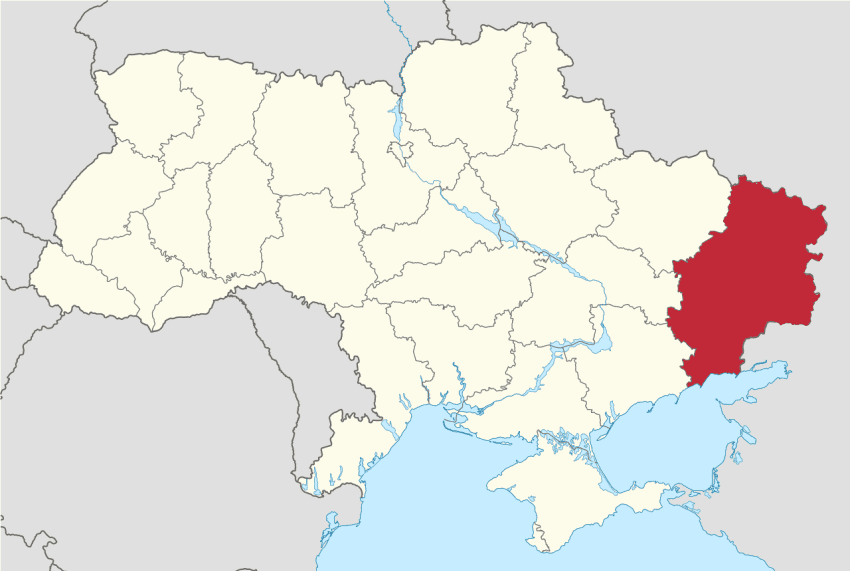
막대한 양의 천연가스와 석탄이 있고 석유도 있다
러시아 입장에서는 전에 강제로 뺏은 크림반도를 부동항으로 써먹기 위해 반드시 필요한 땅이라함
러시아가 우크라이나 침공한 목적이 돈바스지역을 먹기 위해서임 ㅇㅇ;
(현재 러시아군이 돈바스지역 약 85~88퍼센트 점령중)
우크라이나 국민들은 대체로 반대하고 있다함
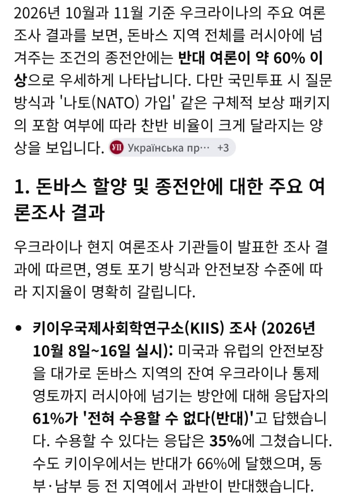
하지만 영토할양 법적 인정없이 이대로 종전에는 찬성여론이 높다
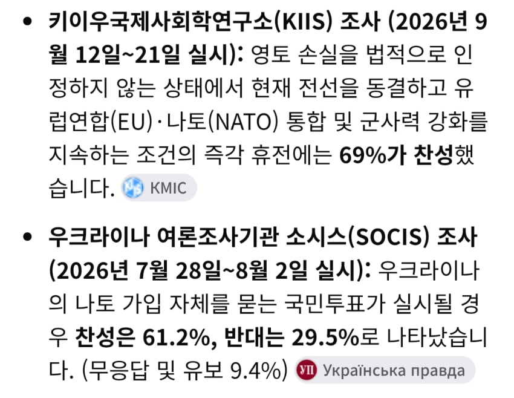
전쟁피로도가 극심하다는 얘기..
돈바스지역을 탈환하기 위해 싸우다 죽은 십수만명의 장병들은 어떻하란 얘긴가..
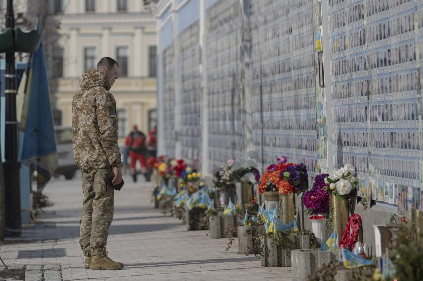
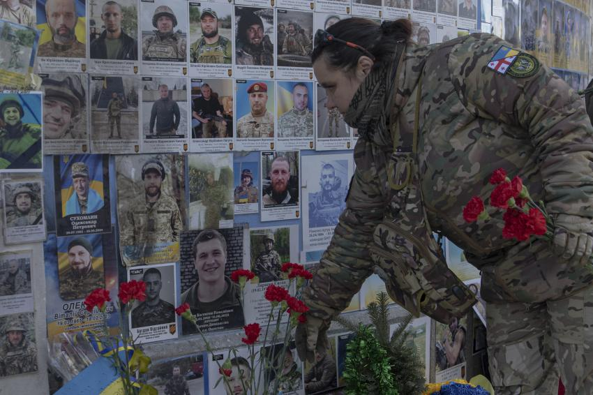
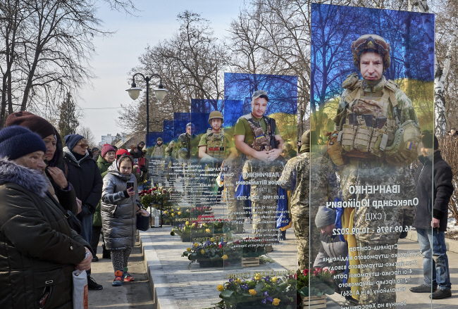
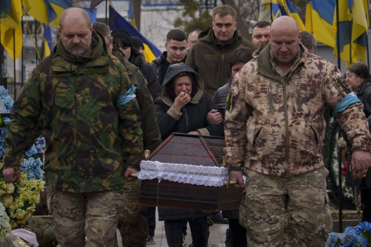
... ..,

댓글
수집 당시 댓글 320개
· ㅇㅇ · 11.15 23:29:41
· 내꿈은기생수! · 11.15 23:35:37
· 내꿈은기생수! · 11.15 23:37:40
· ㅇㅇ · 11.16 00:07:02
· ㅇㅇ · 11.16 10:18:08
· ㅇㅇ · 11.16 10:31:08
ㅇㅇ · 11.15 23:26:56
· ㅇㅇ · 11.16 05:36:24
20028 · 11.15 23:29:23
ㅇㅇ · 11.15 23:31:51
내꿈은기생수! · 11.15 23:35:10
· 내꿈은기생수! · 11.15 23:39:22
ㅇㅇ · 11.15 23:36:53
· ㅇㅇ · 11.16 10:16:45
ㅇㅇ · 11.15 23:37:33
· ㅇㅇ · 11.15 23:40:33
· ㅇㅇ · 11.16 00:09:03
· ㅇㅇ · 11.16 10:15:46
· ㅇㅇ · 11.16 10:16:05
ㅇㅇ · 11.15 23:38:51
ㅇㅇ · 11.15 23:40:57
ㅇㅇ · 11.15 23:41:09
· ㅇㅇ · 11.15 23:58:22
ㅇㅇ · 11.15 23:47:07
· ㅇㅇ · 11.15 23:50:02
· ㅇㅇ · 11.15 23:51:06
· ㅇㅇ · 11.15 23:53:28
· 공정성장 · 11.15 23:58:13
ㅇㅇ · 11.15 23:47:56
· ㅇㅇ · 11.15 23:53:36
· ㅁㄴㅇ · 11.16 00:01:17
· ㅇㅇ · 11.16 00:09:00
· ㅁㄴㅇ · 11.16 00:11:56
· ㅇㅇ · 11.16 00:39:16
· ㅁㄴㅇ · 11.16 00:45:59
ㅇㅇ · 11.15 23:49:59
ㅇㅇ · 11.15 23:53:18
ㅁㄴㅇ · 11.15 23:54:05
· ㅇㅇ · 11.16 00:05:29
· ㅁㄴㅇ · 11.16 00:09:12
· ㅇㅇ · 11.16 02:34:17
· ㅇㅇ · 11.16 02:35:14
· ㅇㅇ · 11.16 10:10:28
ㅇㅇ · 11.15 23:55:18
환란 전 교회 휴거 · 11.15 23:56:41
ㅇㅇ · 11.16 00:06:39
· ㅇㅇ · 11.16 10:10:00
ㅇㅇ · 11.16 00:12:25
ㅇㅇ · 11.16 00:15:06
ㅇㅇ · 11.16 00:16:44
· ㅁㄴㅇ · 11.16 00:19:16
· ㅇㅇ · 11.16 00:20:53
· ㅁㄴㅇ · 11.16 00:24:07
· ㅇㅇ · 11.16 00:43:24
· ㅁㄴㅇ · 11.16 00:50:29
· ㅇㅇ · 11.16 02:04:12
· ㅇㅇ · 11.16 02:36:49
· ㅇㅇ · 11.16 03:31:04
ㅇㅇ · 11.16 01:22:41
ㅇㅇ · 11.16 01:39:26
· ㅇㅇ · 11.16 09:51:56
· ㅇㅇ · 11.16 19:20:39
ㅇㅇ · 11.16 01:42:52
ㅇㅇ · 11.16 02:00:30
· ㅇㅇ · 11.16 09:51:16
ㅇㅇ · 11.16 02:05:18
· ㅇㅇ · 11.16 10:09:16
ㄴㅁㄴㅁ · 11.16 03:00:16
ㅇㅇ · 11.16 03:44:22
ㅇㅇ · 11.16 04:12:00
· ㅇㅇ · 11.16 10:08:39
ㅇㅇ · 11.16 05:00:02
ㅇㅇ · 11.16 05:44:18
micro멍거 · 11.16 05:57:51
ㅇㅇ · 11.16 07:09:20
ㅇㅇ · 11.16 07:09:38
· ㅇㅇ · 11.16 09:49:49
· ㅇㅇ · 11.16 10:08:03
ㅇㅇ · 11.16 07:20:19
ㅇㅇ · 11.16 07:22:23
ㅇㅇ · 11.16 08:32:33
· ㅇㅇ · 11.16 10:07:28
ㅇㅇ · 11.16 09:09:37
ㅇㅇ · 11.16 09:42:16
ㅇㅇ · 11.16 09:54:16
· ㅇㅇ · 11.16 09:56:03
· ㅇㅇ · 11.16 09:56:48
· ㅇㅇ · 11.16 10:00:55
· ㅇㅇ · 11.16 10:03:05
· ㅇㅇ · 11.16 10:03:36
· ㅇㅇ · 11.16 10:05:04
· ㅇㅇ · 11.16 10:36:46
ㅇㅇ · 11.16 09:57:52
ㅇㅇ · 11.16 10:06:32
ㅇㅇ · 11.16 11:05:37
ㅇㅇ · 11.16 11:35:48
ㅇㅇ · 11.16 11:57:39
ПКТ · 11.16 11:58:24
ㅇㅇ · 11.16 12:00:37
ㅇㅇ · 11.16 12:28:41
· 돌아온애우 · 11.15 22:58:55
· 돌아온애우 · 11.15 22:59:40
· ㅇㅇ · 11.15 23:03:15
· ㅇㅇ · 11.15 23:05:05
· 돌아온애우 · 11.15 23:05:58
· ㅇㅇ · 11.15 23:10:33
· ㅇㅇ · 11.15 23:11:30
· ㅇㅇ · 11.15 23:13:45
ㅇㅇ · 11.15 22:30:31
· ㅇㅇ · 11.15 22:39:04
· ㅇㅇ · 11.15 22:43:36
ㅇㅇ · 11.15 22:30:56
ㅇㅇ · 11.15 22:31:00
· 돌아온애우 · 11.15 22:33:54
· 돌아온애우 · 11.15 22:35:23
ㅇㅇ · 11.15 22:31:33
· ㅇㅇ · 11.15 23:58:24
Doll · 11.15 22:31:44
ㅇㅇ · 11.15 22:32:17
· ㅇㅇ · 11.15 22:40:35
· ㅇㅇ · 11.15 22:43:11
ㅇㅇ · 11.15 22:32:41
ㅇㅇ · 11.15 22:33:47
· ㅇㅇ · 11.15 22:37:24
· ㅇㅇ · 11.15 23:12:10
노은지 · 11.15 22:35:14
ㅇㅇ · 11.15 22:35:17
· ㅇㅇ · 11.15 22:41:05
ㅇㅇ · 11.15 22:39:31
ㅇㅇ · 11.15 22:41:57
· ㅇㅇ · 11.15 22:42:14
· ㅇㅇ · 11.15 22:43:25
· tprtmtprtmqhwlxjf · 11.16 00:16:48
ㅇㅇ · 11.15 22:42:15
· ㅇㅇ · 11.15 23:48:53
ㅇㅇ · 11.15 22:43:26
· ㅇㅇ · 11.15 22:50:24
킬뎃1.0 · 11.15 22:44:04
ㅇㅇ · 11.15 22:44:20
ㅇㅇ · 11.15 22:44:37
· ㅇㅇ · 11.15 22:51:52
ㅇㅇ · 11.15 22:45:16
외교서기 범죄인인도 하라고 나치냐?
ㅇㅇ · 11.15 22:46:07
· ㅇㅇ · 11.15 22:46:53
· ㅇㅇ · 11.16 17:02:58
ㅇㅇ · 11.15 22:47:35
ㅇㅇ · 11.15 22:48:24
ㅇㅇ · 11.15 22:50:07
· ㅇㅇ · 11.15 22:57:16
· ㅇㅇ · 11.16 17:04:24
무현메딕 · 11.15 22:51:03
ㅇㅇ · 11.15 22:52:10
ㅇㅇ · 11.15 22:53:29
ㅇㅇ · 11.15 22:53:50
ㅇㅇ · 11.15 22:53:54
o o · 11.15 22:56:08
· ㅇㅇ · 11.15 22:58:01
· o o · 11.15 22:59:38
ㅇㅇ · 11.15 22:58:44
· ㅇㅇ · 11.15 22:58:59
· ㅇㅇ · 11.15 23:21:03
· ㅇㅇ · 11.15 23:25:51
ㅇㅇ · 11.15 23:01:38
· ㅇㅇ · 11.15 23:08:25
· ㅇㅇ · 11.15 23:15:35
· ㅇㅇ · 11.15 23:17:36
· ㅇㅇ · 11.15 23:18:47
· ㅇㅇ · 11.15 23:21:05
· ㅇㅇ · 11.15 23:24:11
· ㅇㅇ · 11.15 23:30:53
· ㅇㅇ · 11.15 23:32:21
· ㅇㅇ · 11.15 23:34:00
· ㅇㅇ · 11.15 23:36:21
· ㅇㅇ · 11.15 23:37:49
· ㅇㅇ · 11.15 23:38:20
· ㅇㅇ · 11.15 23:38:46
· ㅇㅇ · 11.15 23:41:03
· ㅇㅇ · 11.15 23:41:36
· ㅇㅇ · 11.15 23:44:03
· ㅇㅇ · 11.15 23:44:15
· ㅇㅇ · 11.15 23:45:01
· ㅇㅇ · 11.16 00:29:58
· ㅇㅇ · 11.16 01:20:09
1 · 11.15 23:03:32
· ㅇㅇ · 11.15 23:41:11
· ㅇㅇ · 11.16 00:49:31
ㅇㅇ · 11.15 23:05:11
· ㅇㅇ · 11.15 23:45:29
· ㅇㅇ · 11.16 00:07:52
ㅇㅇ · 11.15 23:20:01
ㅇㅇ · 11.15 23:21:03
· ㅇㅇ · 11.16 10:18:44
ㅇㅇ · 11.15 23:22:52
· ㅇㅇ · 11.15 23:24:48
· ㅇㅇ · 11.15 23:25:52
· ㅇㅇ · 11.15 23:26:12
· ㅇㅇ · 11.16 00:08:28
· ㅇㅇ · 11.16 00:08:37
ㅇㅇ · 11.15 23:24:27
· ㅇㅇ · 11.15 23:29:04
· ㅇㅇ · 11.15 22:08:20
· ㅁㄴㅇㄹ · 11.15 22:26:55
ㅇㅇ · 11.15 22:07:50
ㅇㅇ · 11.15 22:07:50
· ㅇㅇ · 11.15 22:09:07
· ㅇㅇ · 11.15 22:09:37
· ㅇㅇ · 11.15 22:11:10
· ㅇㅇ · 11.15 22:13:52
· ㅁㄴㅇㄹ · 11.15 22:26:12
· ㅁㄴㅇㄹ · 11.15 22:26:36
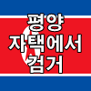
· ㅇㅇ · 11.15 22:27:16
· ㅇㅇ · 11.15 22:27:38
· ㅇㅇ · 11.15 22:28:59
· ㅁㄴㅇㄹ · 11.15 22:30:04
· ㅇㅇ · 11.15 23:28:01
· ㅇㅇ · 11.16 01:16:37
ㅇㅇ · 11.15 22:07:58
ㅇㅇ · 11.15 22:08:06
와 · 11.15 22:08:59
ㅇㅇ · 11.15 22:09:11
· ㅇㅇ · 11.15 22:09:24
· ㅇㅇ · 11.15 22:09:30
ㅇㅇ · 11.15 22:09:52
· ㅇㅇ · 11.15 22:13:14
· ㅇㅇ · 11.15 22:23:53
ㅇㅇ · 11.15 22:10:51
· ㅇㅇ · 11.15 22:14:03
· ㅇㅇ · 11.15 22:21:17
· ㅇㅇ · 11.15 22:22:30
· ㅇㅇ · 11.15 22:22:47
ㅇㅇ · 11.15 22:10:57
· ㅇㅇ · 11.15 22:54:13
공정성장 · 11.15 22:11:52
· 공정성장 · 11.15 22:12:00
ㅇㅇ · 11.15 22:12:05
ㅇㅇ · 11.15 22:12:21
· ㅇㅇ · 11.15 22:13:25
ㅇㅇ · 11.15 22:12:54
ㅇㅇ · 11.15 22:13:40
· ㅇㅇ · 11.15 22:19:22
· ㅇㅇ · 11.15 22:44:01
· ㅇㅇ · 11.16 01:25:55
ㅇㅇ · 11.15 22:14:21
ㅇㅇ · 11.15 22:15:21
ㅇㅇ · 11.15 22:15:35
· ㅇㅇ · 11.15 22:59:59
할로이 · 11.15 22:15:36
· ㅇㅇ · 11.15 22:23:30
ㅇㅇ · 11.15 22:16:55
· ㅇㅇ · 11.15 22:18:06
· ㅇㅇ · 11.15 22:20:01
· ㅇㅇ · 11.15 23:03:52
ㅇㅇ · 11.15 22:17:10
· ㅇㅇ · 11.15 22:20:48
· ㅇㅇ · 11.15 22:22:01
· ㅇㅇ · 11.15 22:42:35
· ㅇㅇ · 11.15 23:14:58
삭제됨 · 11.15 22:17:17
· ㅇㅇ · 11.15 22:21:18
ㅇㅇ · 11.15 22:17:27
· 2456778 · 11.15 22:18:58
· ㅁㄴㅇㄹ · 11.15 22:29:06
2456778 · 11.15 22:17:34
해갤러 · 11.15 22:17:40
돈가스
ㅇㅇ · 11.15 22:17:40
· ㅇㅇ · 11.15 22:21:59
ㅇㅇ · 11.15 22:18:02
· ㅇㅇ · 11.15 22:23:12
· ㅇㅇ · 11.15 22:24:08
· ㅇㅇ · 11.15 22:41:42
· ㅇㅇ · 11.15 22:42:42
· ㅇㅇ · 11.15 22:55:45
· ㅇㅇ · 11.16 01:21:07
2456778 · 11.15 22:18:31
2456778 · 11.15 22:18:36
ㅇㅇ · 11.15 22:22:26
ㅇㅇ · 11.15 22:22:42
QLD사라 · 11.15 22:22:47
ㅇㅇ · 11.15 22:22:51
ㅁㄴㅇㄹ · 11.15 22:23:22
· ㅁㄴㅇㄹ · 11.15 22:23:37
· ㅁㄴㅇㄹ · 11.15 22:24:18
· ㅇㅇ · 11.15 23:14:10
ㅇㅇ · 11.15 22:26:56
· ㅇㅇ · 11.15 22:41:48
ㅇㅇ · 11.15 22:28:19
ㅇㅇ · 11.15 22:29:49
돌아온애우 · 11.15 22:30:06
· 돌아온애우 · 11.15 22:31:19
· ㅇㅇ · 11.15 22:35:19
· 돌아온애우 · 11.15 22:36:28
· 돌아온애우 · 11.15 22:36:37
· ㅇㅇ · 11.15 22:37:28
· 돌아온애우 · 11.15 22:39:45
· 돌아온애우 · 11.15 22:40:21
· ㅇㅇ · 11.15 22:41:12
· ㅇㅇ · 11.15 22:43:45
· 돌아온애우 · 11.15 22:44:18
· ㅇㅇ · 11.15 22:47:23
· 돌아온애우 · 11.15 22:57:50
서브프라임아재 · 11.14 23:19:36
· KODEX · 11.14 23:20:19
· 서브프라임아재 · 11.14 23:20:46
· KODEX · 11.14 23:21:19
· ㅇㅇ · 11.15 22:07:59
· ㅇㅇ · 11.15 22:36:29
ㅇㅇ · 11.14 23:20:09
11 · 11.15 00:18:02
봇치쟝 · 11.15 22:05:47
· ㅇㅇ · 11.15 22:07:50
ㅇㅇ · 11.15 22:06:24
ㅇㅇ · 11.15 22:07:04
· ㅇㅇ · 11.15 23:46:52
ㅇㅇ · 11.15 22:07:15
· ㅇㅇ · 11.15 22:09:03
· ㅁㄴㅇㄹ · 11.15 22:30:53
황족 · 11.15 22:07:24
ㅇㅇ · 11.15 22:07:44
· ㅇㅇ · 11.15 22:08:00
· ㅇㅇ · 11.15 22:08:10